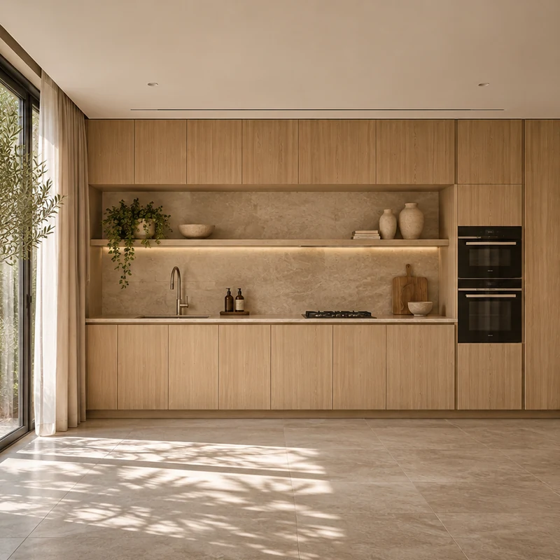
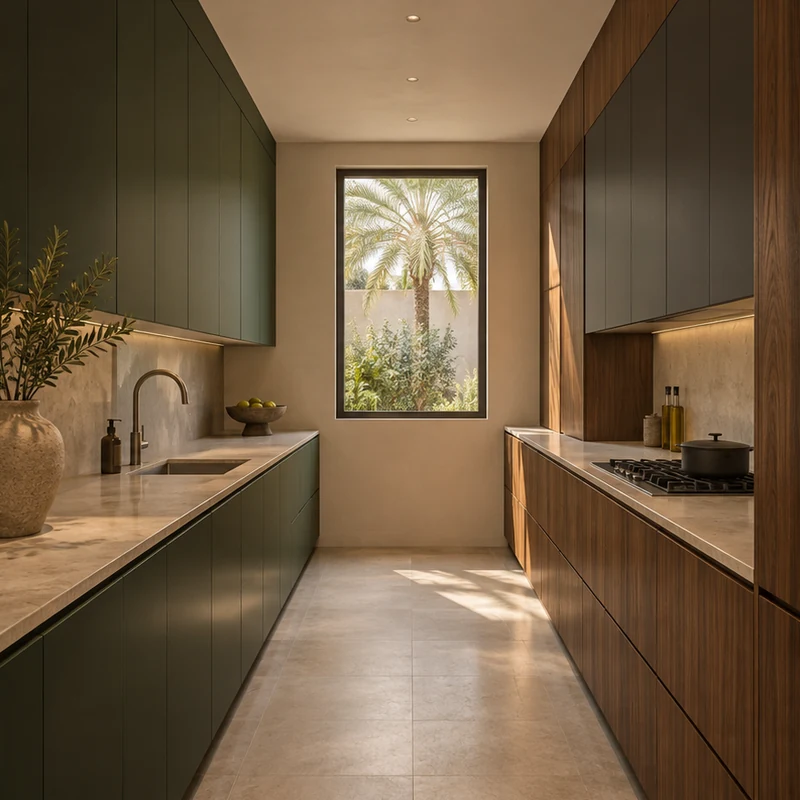

مطبخ بجزيرة
جزيرة من الترافرتين
جزيرة للتحضير والجلوس تقابل جدار الخزائن والأجهزة.
اختر توزيعًا يناسب مساحة مطبخك، ثم أضف التصميم إلى طلب عرض السعر.
مطبخ بجزيرة
جزيرة للتحضير والجلوس تقابل جدار الخزائن والأجهزة.

مطبخ زاوية
خزائن على جدارين متجاورين تترك وسط المطبخ مفتوحًا.

مطبخ على ثلاثة جدران
توزيع يُبقي الحوض والموقد وسطح التحضير على مسافة قريبة.

مطبخ مستقيم
تجتمع الأجهزة والخزائن على امتداد جدار واحد، ويظل الجانب المقابل مفتوحًا.

مطبخ متوازٍ
يوزّع السطحان المتقابلان مناطق التحضير والغسيل والتخزين على جانبي الممر.
اختر شكل المساحة وما تحتاجه من تحضير وتخزين أو جلوس.